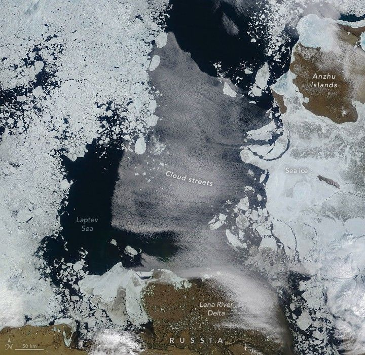

Cloud Streets Over the Laptev Sea
In July 2025, a striking cloud formation developed over the Laptev Sea north of Siberia. The long, parallel bands of cumulus clouds, known as cloud streets, can form when frigid Arctic air blows across sea ice and over areas of comparatively warm open water.
A mix of sea ice and open water was present on July 10, 2025, when the MODIS (Moderate Resolution Imaging Spectroradiometer) on NASA’s Terra satellite captured this image. These conditions likely contributed to the formation of cloud streets, which are visible signs of the atmosphere responding to imbalances in energy distribution.
Cloud streets form as “warm” open water transfers heat and moisture to the cold air. This creates rising columns of heated air (thermals) that ascend until reaching a temperature inversion, a warmer air layer that acts like a lid. The thermals roll over and loop, forming parallel cylinders of rotating air. Clouds appear along the rising sides, while skies remain clear along descending sides.
Winds on July 10 were favorable for cloud street formation. Meteorologist Scott Bachmeier, of the Cooperative Institute for Meteorological Satellite Studies at the University of Wisconsin-Madison, noted a tight pressure gradient between a low-pressure area near the North Pole and high pressure over the Siberian coast.
“Strong offshore winds exiting the sea ice edge and moving across the open water would definitely support the formation of the cloud streets seen in the image,” Bachmeier said.
The sharp northern edge of the cloud streets is less certain. Bachmeier suggested it may mark the leading edge of a pulse of warmer air near the surface.
The image captures the Laptev Sea during a transitional period. Seasonal melting in 2025 began by late May, with open water appearing in the Laptev Sea in June, according to the National Snow and Ice Data Center. By autumn, the region will begin to refreeze.